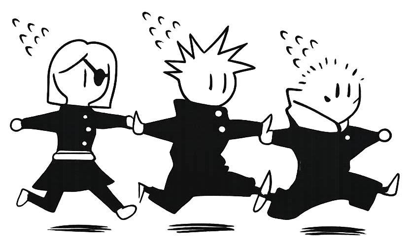

Portfolio
Lo visual atrae.
La historia conecta.
Diseño editorialIlustraciónNarrativa transmediaUI/UXEstrategia y comunicación
UNA MIRADA.
MÁS DE UN
LENGUAJE.
Soy Adela. Me interesa lo que ocurre cuando una imagen empieza a contar una historia.
Estudio Gestión y Proyectos de Narrativa Transmedia. El anime, el manga y la escritura forman parte de mis referencias y alimentan mi interés por crear experiencias que unan creatividad y estrategia.
En este portfolio conviven distintas disciplinas: no como piezas aisladas, sino como herramientas para encontrar la forma que necesita cada idea.

SKILLS
- Illustrator
- InDesign
- Photoshop
- Premiere Pro
- ChatGPT
- Figma
- Canva
El concepto,
en práctica.
01
ENTENDER
El contexto, lo que se quiere contar y a quién.
02
EXPLORAR
Referencias, conceptos y distintas posibilidades visuales y narrativas.
03
DAR FORMA
Elegir un lenguaje y explicar las decisiones que sostienen el resultado.
¿Un proyecto, una idea o una oportunidad de prácticas?
HABLEMOSDISEÑO CON INTENCIÓN. HISTORIAS CON IDENTIDAD.Abrir contacto →